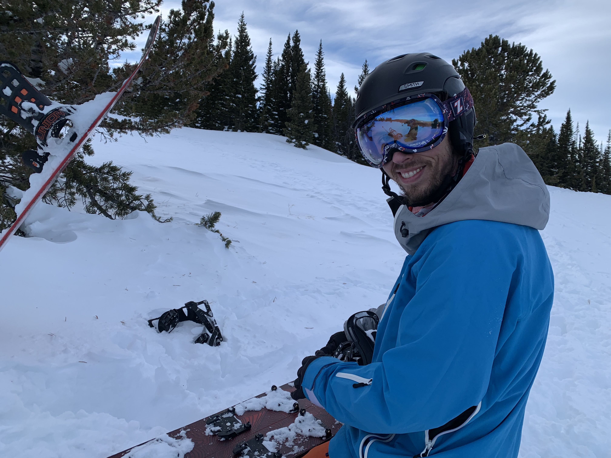
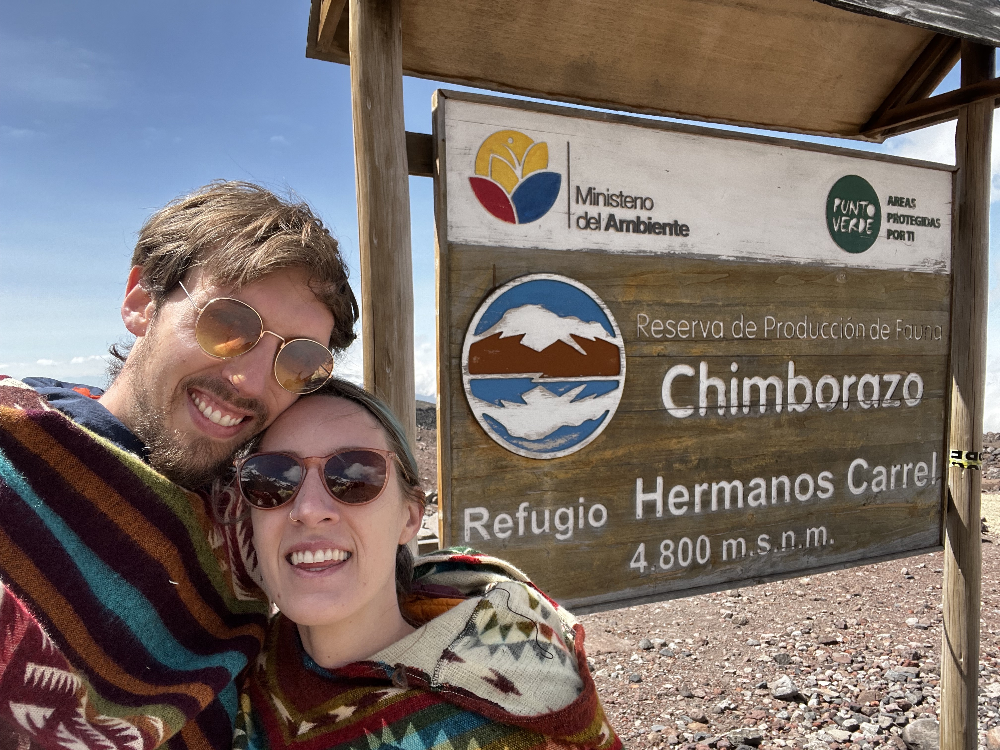
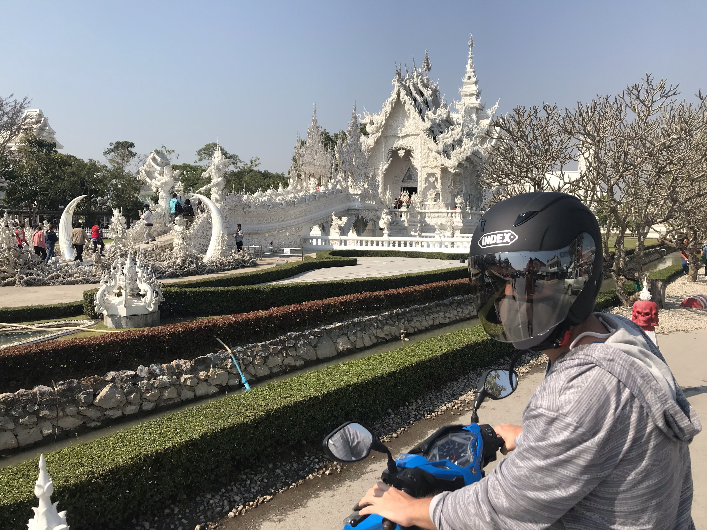

About
I've worked across robotics — mechanical design, firmware, dynamics, control, motion planning, and RL/ML. I'm drawn to prototyping ambitious concepts and pushing them to demo.
The frontier of ML for robotics controls keeps me focused — especially hard problems like multi-agent interaction and complex decision-making.
Snowboarding

Snowboarding for over 20 years. AIARE certified for backcountry avalanche safety. Ridden in France, Canada, Utah, Colorado, California, and Japan.
Travel
Traveled through Thailand, Nepal, India, Kyrgyzstan, Malaysia, Croatia, South Africa, and Botswana. Also lived in England for a year while working at Rolls-Royce.
Preferred transport: scooters and motorcycles. Favorite activities abroad: trekking and SCUBA diving.

